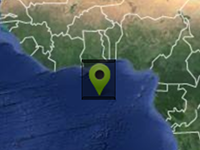

Example of how to intercept drawing tooltips and draw them yourself.
In this case, the square drawn around the marker.
In this case, the square drawn around the marker.
Usage instructions:
Add this script to map GameObject.
Add this script to map GameObject.
OnDrawTooltipExample.cs
/* INFINITY CODE 2013-2016 */
/* http://www.infinity-code.com */
using UnityEngine;
namespace InfinityCode.OnlineMapsExamples
{
[AddComponentMenu("Infinity Code/Online Maps/Examples (API Usage)/OnDrawTooltipExample")]
public class OnDrawTooltipExample : MonoBehaviour
{
private void Start()
{
// Create new event OnDrawTooltip for all markers.
OnlineMapsMarkerBase.OnMarkerDrawTooltip += OnMarkerDrawTooltip;
// Create new event OnDrawTooltip for custom marker.
OnlineMaps.instance.AddMarker(new Vector2(), null, "New marker").OnDrawTooltip += OnDrawTooltip;
}
private void DrawBoxAroundMarker(OnlineMapsMarker marker)
{
// Get screen rect of marker
Rect rect = marker.realScreenRect;
// Convert Input coordinates to GUI coordinates
rect.y = Screen.height - rect.y;
rect.height *= -1;
// Draw box
GUI.Box(rect, new GUIContent());
}
private void OnDrawTooltip(OnlineMapsMarkerBase marker)
{
Debug.Log(marker.label);
// Here you draw the tooltip for the marker.
DrawBoxAroundMarker(marker as OnlineMapsMarker);
}
private void OnMarkerDrawTooltip(OnlineMapsMarkerBase marker)
{
Debug.Log(marker.label);
// Here you draw the tooltip for the marker.
DrawBoxAroundMarker(marker as OnlineMapsMarker);
}
}
}